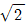
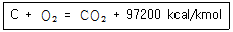
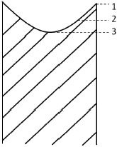
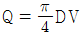
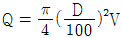
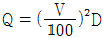

에너지관리산업기사 (2017-05-07 기출문제)
1과목: 열역학 및 연소관리
1. 비열에 관한 설명으로 틀린 것은?
- 비열은 1℃의 온도를 변화시키는데 필요한 단위질량당 열량이다.
- 정압비열은 압력이 일정할 때 기체 1kg을 1℃ 높이는데 필요한 열량이다.
- 기체의 정압비열과 정적비열은 일반적으로 같지 않다.
- 정압비열은 정적비열보다 클 수도, 작을 수도 있다.
(정답률: 87%)

2. 보일러의 자연통풍에서 통풍력을 크게 하기 위한 방법이 아닌 것은?
- 연돌의 높이를 높인다.
- 배기가스 온도를 높인다.
- 연돌 상부 단면적을 작게 한다.
- 연도의 굴곡부를 줄인다.
(정답률: 75%)
3. 두 개의 단열과정과 두 개의 등온과정으로 이루어진 사이클은?
- 오토사이클
- 디젤사이클
- 카르노사이클
- 브레이튼사이클
(정답률: 84%)
4. 엔트로피(entropy)에 대한 설명으로 옳은 것은?
- 열역학 제2법칙과 관련된 것으로 비가역 사이클에서 항상 엔트로피가 증가한다.
- 열역학 제1법칙과 관련된 것으로 가역사이클이 비가역 사이클보다 엔트로피의 증가가 뚜렷하다.
- 열역학 제2법칙으로 정의된 엔트로피는 과정의 진행방향과는 아무런 관련이 없다.
- 엔트로피의 단위는 K/kJ이다.
(정답률: 74%)
5. 어떤 용기 내의 기체의 압력이 계기압력으로 Pg 이다. 대기압을 Pa 라고 할 때, 기체의 절대압력은?
- Pg –Pa
- Pg + Pa
- Pg × Pa
- Pg / Pa
(정답률: 89%)
6. 증기터빈에 36kg/s의 증기를 공급하고 있다. 터빈의 출력이 3×104kW 이면 터빈의 증기 소비율은 몇 kg/kWㆍh 인가?
- 3.08
- 4.32
- 6.25
- 7.18
(정답률: 68%)
7. 통풍압력을 2배로 높이려면 원심형 송풍기의 회전수를 몇 배로 높여야 하는가? (단, 다른 조건은 동일하다고 본다.)
- 1

- 2
- 4
(정답률: 83%)
8. 탄소를 완전 연소시키면 다음 반응식과 같이 탄산가스와 함께 높은 열이 발생한다. 이를 참고하여 탄소(C) 1kg을 완전연소시켰을 때 발생하는 열량은?

- 2550 kcal/kg
- 8100 kcal/kg
- 12720 kcal/kg
- 16200 kcal/kg
(정답률: 74%)
9. 연소장치의 선회방식 보염기가 아닌 것은?
- 평행류식
- 축류식
- 반경류식
- 혼류식
(정답률: 63%)
10. 연돌의 입구 온도가 200℃, 출구 온도가 30℃일 때, 배출가스의 평균온도는 약 몇 ℃인가?
- 85℃
- 90℃
- 109℃
- 115℃
(정답률: 54%)
11. 보일러 집진장치 중 매진을 액막이나 액방울에 충돌시키거나 접촉시켜 분리하는 것은?
- 여과식
- 세정식
- 전기식
- 관성 분리식
(정답률: 78%)
12. 기체연료의 특징에 관한 설명으로 틀린 것은?
- 회분발생이 많고 수송이나 저장이 편리하다.
- 노 내의 온도분포를 쉽게 조절할 수 있다.
- 연소조절, 점화, 소화가 용이하다.
- 연소효율이 높고 약간의 과잉공기로 완전연소가 가능하다.
(정답률: 91%)
13. 고체 연료가 가열되어 외부에서 점화하지 않아도 연소가 일어나는 최저온도를 무엇이라고 하는가?
- 착화온도
- 최적온도
- 연소온도
- 기화온도
(정답률: 88%)
14. 이상기체 5kg이 350℃에서 150℃까지 “PV1.3 = 상수” 에 따라 변화하였다. 엔트로피의 변화는? (단, 가스의 정적비열은 0.653kJ/kgㆍK이고, 비열비(k)는 1.4 이다.)
- 1.69kJ/K
- 1.52kJ/K
- 0.85kJ/K
- 0.42kJ/K
(정답률: 32%)
15. 가스연료 연소 시 발생하는 현상 중 옐로우 팁(Yellow tip)을 바르게 설명한 것은?
- 버너에서 부상하여 일정한 거리에서 연소하는 불꽃의 모양
- 불꽃의 색상이 적황색으로 1차공기가 부족한 경우 발생하는 불꽃의 모양
- 가스연소 시 공기량이 과다하여 발생하는 불꽃의 모양
- 불꽃이 염공을 따라 거꾸로 들어가는 현상
(정답률: 88%)
16. 탄소 0.87, 수소 0.1, 황 0.03 의 조성을 가지는 연료가 있다. 이론 건배가스량은 약몇 Nm3/kg 인가?
- 7.54
- 8.84
- 9.94
- 10.84
(정답률: 52%)
17. 얍력 200kPa, 체적 0.4m3인 공기를 압력이 일정한 상태에서 체적을 0.6m3로 팽창시켰다. 팽창 중에 내부에너지가 80kJ 증가하였으면 팽창에 필요한 열량은?
- 40kJ
- 60kJ
- 80kJ
- 120kJ
(정답률: 64%)
18. 증기의 압력이 높아질 때 나타나는 현상에 관한 설명으로 틀린 것은?
- 포화온도가 높아진다.
- 증발잠열이 증대한다.
- 증기의 엔탈피가 증가한다.
- 포화수 엔탈피가 증가한다.
(정답률: 75%)
19. 15℃의 물 1kg을 100℃의 포화수로 변화시킬 때 엔트로피 변화량은? (단, 물의 평균 비열은 4.2kJ/kgㆍK 이다.)
- 1.1kJ/K
- 8.0kJ/K
- 6.7kJ/K
- 85.0kJ/K
(정답률: 53%)
20. 석탄을 공업 분석하였더니 수분이 3.35%, 휘발분이 2.65%, 회분이 25.5% 이었다. 고정탄소분은 몇 % 인가?
- 37.6
- 49.4
- 59.8
- 68.5
(정답률: 60%)
2과목: 계측 및 에너지진단
21. 다음 중 액주계를 읽는 정확한 위치는?

- 1
- 2
- 3
- 아무 곳이든 괜찮다.
(정답률: 89%)
22. 보일러 열정산시 입열항목에 해당되지 않는 것은?
- 방산에 의한 손실열
- 연료의 연소열
- 연료의 현열
- 공기의 현열
(정답률: 83%)
23. 반도체 측온저항체의 일종으로 니켈, 코발트, 망간 등 금속산화물을 소결시켜 만든 것으로 온도계수가 부(-)특성을 지닌 것은?
- 서미스터 측온체
- 백금 측온체
- 니켈 측온체
- 동 측온체
(정답률: 87%)
24. 열전대에 관한 설명으로 틀린 것은?
- 열전대의 접점은 용접하여 만들어도 무방하다.
- 열전대의 기본 현상을 발견한 사람은 Seebeck이다.
- 열전대를 통한 열의 흐름은 온도의 측정에 영향을 미치지 않는다.
- 열전대의 구비조건으로 전기저항, 저항온도, 계수 및 열전도율이 작아야 한다.
(정답률: 71%)
25. 면적식 유량계의 특징에 대한 설명으로 틀린 것은?
- 고점도 액체의 측정이 가능하다.
- 부식액의 측정에 적합하다.
- 적산용 유량계로 사용된다.
- 유량 눈금이 균등하다.
(정답률: 71%)
26. 보일러 1마력은 몇 kgf의 상당 증발량에 해당하는가? (단, 100℃의 물을 1시간 동안 같은 온도의 증기로 변화시킬 수 있는 능력이다.)
- 10.65
- 12.68
- 15.65
- 17.64
(정답률: 83%)
27. 다음 중 질량의 보조단위가 아닌 것은?
- L/min
- g/s
- t/s
- g/h
(정답률: 75%)
28. 보일러의 노내압을 제어하기 위한 조작으로 적절하지 않은 것은?
- 연소가스 배출량의 조작
- 공기량의 조작
- 댐퍼의 조작
- 급수량 조작
(정답률: 81%)
29. 탄성식 압력계의 일종으로 보일러의 증기압 측정 등 공업용으로 많이 사용되는 압력계는?
- 링 밸런스식 압력계
- 부르동관식 압력계
- 벨로즈식 압력계
- 피스톤식 압력계
(정답률: 79%)
30. 다이어프램 압력계에 대한 설명으로 틀린 것은?
- 연소로의 드래프트게이지로 사용된다.
- 먼지를 함유한 액체나 점도가 높은 액체의 측정에는 부적당하다.
- 측정이 가능한 범위는 공업용으로는 20~5000mm O 정도이다.
- 다이어프램의 재료로는 고무, 인청동, 스테인리스 등의 박판이 사용된다.
(정답률: 70%)
31. 다음 중 O2계로 사용되지 않는 것은?
- 연소식
- 자기식
- 적외선식
- 세라믹식
(정답률: 66%)
32. 다음 중 SI 기본단위가 아닌 것은?
- 물질량[mol]
- 광도[Cd]
- 전류[A]
- 힘[N]
(정답률: 73%)
33. 두께가 15cm이며 열전도율이 40kcal/mㆍhㆍ℃, 내부온도가 230℃, 외부온도가 65℃일 때, 전열면적 1m2당 1시간 동안에 전열되는 열량은 몇 kcal/h인가?
- 40000
- 42000
- 44000
- 46000
(정답률: 68%)
34. 다음 중 보일러의 자동제어가 아닌 것은?
- 온도제어
- 급수제어
- 연소제어
- 위치제어
(정답률: 84%)
35. 다음 중 비접촉식 온도계에 해당하는 것은?
- 유리온도계
- 저항온도계
- 압력온도계
- 광고온도계
(정답률: 87%)
36. 유압식 신호전달 방식의 특징에 대한 설명으로 틀린 것은?
- 비압축성이므로 조작속도 및 응답이 빠르다.
- 주위의 온도변화에 영향을 받지 않는다.
- 전달의 지연이 적고 조작량이 강하다.
- 인화의 위험성이 있다.
(정답률: 78%)
37. 조절기가 50~100℉ 범위에서 온도를 비례제어하고 있을 때 측정온도가 66℉와 70℉에 대응할 때의 비례대는 몇 %인가?
- 8
- 10
- 12
- 14
(정답률: 55%)
38. 열정산 기준에서 보일러 범위에 포함되지 않는 열은?
- 입열
- 출열
- 손실열
- 외부열원
(정답률: 86%)
39. 다음 중 압력을 표시하는 단위가 아닌 것은?
- kPa
- N/m2
- bar
- kgf
(정답률: 77%)
40. 액면에 부자를 띄어 부자가 상하로 움직이는 위치로 액면을 측정하는 것으로서 주로 저장탱크, 개방 탱크 및 고압 밀폐탱크 등의 액위 측정에 사용되는 액면계는?
- 직관식 액면계
- 플로트식 액면계
- 방사성 액면계
- 압력식 액면계
(정답률: 89%)
3과목: 열설비구조 및 시공
41. 전기로나 시멘트 소성용 회전가마의 소성대 내벽에 사용하기 가장 적합한 내화물은?
- 내화점토질 내화물
- 크롬-마그네시아 내화물
- 고알루미나질 내화물
- 규석질 내화물
(정답률: 70%)
42. 다음 중 사용압력이 비교적 낮은 곳의 배관에 사용하는 “배관용 탄소 강관”의 기호로 맞는 것은?
- SPPH
- SPP
- SPPS
- SPA
(정답률: 83%)
43. 배관에 나사가공을 하는 동력 나사 절삭기의 형식이 아닌 것은?
- 오스터식
- 호프식
- 로터리식
- 다이헤드식
(정답률: 73%)
44. 가열로의 내벽온도를 1200℃, 외벽온도를 200℃로 유지하고 매시간당 1m2에 대한 열손실을 400kcal로 설계할 때 필요한 노벽의 두께는? (단, 노벽 재료의 열전도율은 0.1kcal/mㆍhㆍ℃이다.)
- 10cm
- 15cm
- 20cm
- 25cm
(정답률: 60%)
45. 배관시공 시 보온재로 사용되는 석면에 대한 설명으로 옳은 것은?
- 유기질 보온재로서 진동이 있는 장치의 보온재로 많이 쓰인다.
- 약 400℃ 이하의 파이프나 탱크, 노벽 등의 보온재로 적합하며, 약 400℃를 초과하면 탈수 분해된다.
- 열전도율이 작고 300~320℃ 에서 열분해 되며, 방습 가공한 것은 습기가 많은 곳의 옥외배관에 사용한다.
- 석회석을 주원료로 사용하며 화학적으로 결합시켜 만든 것으로 사용온도는 650℃까지이다.
(정답률: 69%)
46. 보일러에서 사용하는 분출관 및 분출밸브 등에 대한 설명으로 틀린 것은?
- 보일러 아랫부분에는 분출관과 분출밸브 또는 분출코크를 설치해야 한다.(관류보일러는 제외)
- 일반적으로 2개 이상의 보일러를 같이 사용할 경우 분출관은 공동으로 사용해야 한다.
- 분출밸브의 크기는 호칭지름 25mm 이상의 것이어야 한다.(전열면적 10m2 이하의 보일러는 호칭지름 20mm 이상 가능)
- 최고사용압력 0.7MPa 이상의 보일러의 분출관에는 분출밸브 2개 또는 분출밸브와 분출 코크를 직렬로 갖추어야 한다.
(정답률: 82%)
47. 보일러에 공기예열기를 설치했을 때의 특징에 관한 설명으로 틀린 것은?
- 보일러의 열효율이 증가된다.
- 노 내의 연소속도가 빨라진다.
- 연소상태가 좋아진다.
- 질이 나쁜 연료는 연소가 불가능하다.
(정답률: 89%)
48. 탄성이 부족하기 때문에 석면, 고무, 파형 금속관 등으로 표면 처리하여 사용하는 합성수지류의 패킹에 속하는 것은?
- 네오프렌
- 펠트
- 유리섬유
- 테프론
(정답률: 80%)
49. 증기 엔탈피가 2800kJ/kg이고 급수 엔탈피가 125kJ/kg 일 때 증발계수는 약 얼마인가? (단,100℃ 포화수가 증발하여 100℃의 건포화증기로 되는데 필요한 열량은 2256.9kJ/kg이다.)
- 1.08
- 1.19
- 1.44
- 1.62
(정답률: 67%)
50. 터널가마의 레일과 바퀴부분이 연소가스에 의해서 부식되지 않도록 하는 시공법은?
- 샌드시일(sand seal)
- 에어커튼(air curtain)
- 내화갑
- 칸막이
(정답률: 83%)
51. 에너지이용 합리화법에 따라 발전용 보일러에 부착되는 안전밸브의 분출정지 압력은 분출압력의 얼마 이상이어야 하는가?
- 분출압력의 0.93배 이상
- 분출압력의 0.95배 이상
- 분출압력의 0.98배 이상
- 분출압력의 1.0배 이상
(정답률: 65%)
52. 보일러 연소 시 배기가스 성분 중 완전연소에 가까울수록 줄어드는 성분은?
- O
- H2O
- CO
- N2
(정답률: 73%)
53. 다음 중 에너지이용 합리화법에 따라 소형 온수보일러에 해당하는 것은?
- 전열면적이 14m2 이하이고 최고사용압력이 0.35MPa 이하의 온수를 발행하는 것
- 전열면적이 24m2 이하이고 최고사용압력이 0.5MPa 이상의 온수를 발행하는 것
- 전열면적이 24m2 이하이고 최고사용압력이 0.35MPa 이하의 온수를 발행하는 것
- 전열면적이 14m2 이하이고 최고사용압력이 0.5MPa 이상의 온수를 발행하는 것
(정답률: 83%)
54. 관류 보일러의 특징에 관한 설명으로 틀린 것은?
- 대형관류 보일러에는 벤슨 보일러, 슐저 보일러 등이 있다.
- 초임계 압력 하에서 증기를 얻을 수 있다.
- 드럼이 필요 없다.
- 부하 변동에 대한 적응력이 크다.
(정답률: 68%)
55. 내화물의 구비조건으로 틀린 것은?
- 상온 및 사용온도에서 압축강도가 클 것
- 사용목적에 따라 적당한 열전도율을 가질 것
- 팽창은 크고 수축이 작을 것
- 온도변화에 의한 파손이 작을 것
(정답률: 86%)
56. 에너지이용 합리화법에 따라 검사대상기기의 설치자가 그 사용 중인 검사대상기기를 폐기한 때에는 그 폐기한 날로부터 며칠 이내에 폐기신고서를 제출하여야 하는가?
- 15일
- 20일
- 30일
- 60일
(정답률: 81%)
57. 에너지이용 합리화법에 따라 증기보일러에 설치되는 안전밸브가 2개 이상인 경우 각각의 작동시험 기준은?
- 최고사용압력의 0.97배 이하, 1.0배 이하
- 최고사용압력의 0.98배 이하, 1.03배 이하
- 최고사용압력의 1.0배 이하, 1.0배 이하
- 최고사용압력의 1.0배 이하, 1.03배 이하
(정답률: 67%)
58. 겔로웨이 관(Galloway tube)을 설치함으로써 얻을 수 있는 이점으로 틀린 것은?
- 화실 내벽의 강도 보강
- 전열면적 증가
- 관수위 대류 순환을 촉진
- 열로 인한 신축변화의 흡수용이
(정답률: 58%)
59. 관의 안지름이 D(cm), 평균유속이 V(m/s)일 때, 평균 유량 Q(m3/s)을 구하는 식은?
- Q = DV



(정답률: 86%)
60. 기수분리기 설치시의 장점이 아닌 것은?
- 습증기의 발생률을 높인다.
- 마찰손실을 작게 한다.
- 관내의 부식을 방지한다.
- 수격작용을 방지한다.
(정답률: 79%)
4과목: 열설비취급 및 안전관리
61. 염산 등을 사용하여 보일러내의 스케일을 용해시켜 제거하는 방법에 대한 설명으로 틀린 것은?
- 스케일의 시료를 채취하여 분석하고, 용해시험을 통하여 세정방법을 결정하여야 한다.
- 본체에 부착되어 있는 안전밸브, 수면계, 밸브류 등은 분리하지 않는다.
- 수소가 발생하여 폭발의 우려가 있으므로 통풍이 잘 되는 장소에서 세정하여야 한다.
- 화학세정이 끝난 다음에는 반드시 물로 충분하게 세척하여 사용한 약액의 영향이 미치지 않도록 주의한다.
(정답률: 84%)
62. 증기보일러 압력계와 연결되는 증기관을 황동관 또는 동관으로 하는 경우 안지름은 최소 몇 mm 이상이어야 하는가?
- 3.5mm
- 5.5mm
- 6.5mm
- 12.7mm
(정답률: 80%)
63. 보일러의 과열 원인으로 가장 거리가 먼 것은?
- 물의 순환이 나쁠 때
- 고온의 가스가 고속으로 전열면에 마찰할 때
- 관식이 많이 퇴적한 부분이 가열되어 열전달이 높아질 때
- 보일러의 이상 저수위에 의하여 빈 보일러를 운전하였을 때
(정답률: 49%)
64. 트랩이나 스트레이너 등의 고장, 수리, 교환 등에 대비 하여 설치하는 것은?
- 바이패스 배관
- 드레인 포켓
- 냉각 레그
- 체크 밸브
(정답률: 84%)
65. 보일러를 사용하지 않고 장기간 보존할 경우 가장 적합한 보존법은?
- 만수 보존법
- 건조 보존법
- 밀폐 만수 보존법
- 청관제 만수 보존법
(정답률: 89%)
66. 에너지 합리화법에 따라 에너지사용계획을 수립하여 산업통상자원부장관에게 제출하여야 하는 자는?
- 민간사업주관자로 연간 5천 티오이 이상의 연료 및 열을 사용하는 시설을 설치하려는 자
- 공공사업주관자로 연간 2천 티오이 이상의 연료 및 열을 사용하는 시설을 설치하려는 자
- 민간사업주관자로 연간 1천만 킬로와트시 이상의 전력을 사용하는 시설을 설치하려는 자
- 공공사업주관자로 연간 2백만 킬로와트시 이상의 전력을 사용하는 사설을 설치하려는 자
(정답률: 80%)
67. 보일러에서 가연가스와 미연가스가 노 내에 발생하는 경우가 아닌 것은?
- 연도가 너무 짧은 경우
- 점화조작에 실패한 경우
- 노 내에 다량의 그을림이 쌓여있는 경우
- 연소정지 중에 연료가 노 내에 스며든 경우
(정답률: 74%)
68. 보일러를 건조보온 방법으로 보존할 때의 유의사항으로 틀린 것은?
- 모든 뚜껑, 밸브, 콕 등은 전부 개방하여 둔다.
- 습기를 제거하기 위하여 생석회를 보일러 안에 둔다.
- 연도는 습기가 없게 항상 건조한 상태가 되도록 한다.
- 보일러 수를 전부 빼고 스케일 제거 후 보일러 내에 열풍을 통과시켜 완전 건조 시킨다.
(정답률: 82%)
69. 다음 중 보일러의 인터록의 종류가 아닌 것은?
- 고수위
- 저연소
- 불착화
- 프리퍼지
(정답률: 64%)
70. 에너지이용 합리화법에 따라 특정열사용기자재 시공업은 누구에게 등록을 하여야 하는 가?
- 국토교통부장관
- 산업통상자원부장관
- 시ㆍ도시자
- 한국에너지공단이사장
(정답률: 59%)
71. 옥내 보일러실에 연료를 저장하는 경우 보일러 외측으로부터 얼마 이상 거리를 두고 저장해야 하는가? (단, 소형 보일러는 제외한다.)
- 0.6m 이상
- 1 m 이상
- 1.2m 이상
- 2 m 이상
(정답률: 72%)
72. 다음 반응 중 경질 스케일 반응식으로 옳은 것은?
- (HCO3)2 + CaCO3 → CaCO3 + H2O + CO2
- 3CaSO4 + 2Na3PO4 → Ca3(PO4)3 + 3Na2SO4
- MgSO4 + CaCO3 + H2O → CaSO4 + Ma(OH)2 + CO2
- MgCO3 + H2O → Mg(OH)2 + CO2
(정답률: 85%)
73. 보일러 파열사고 원인 중 구조물의 강도 부족에 의한 원인이 아닌 것은?
- 재료의 불량
- 용접 불량
- 용수관리의 불량
- 동체의 구조 불량
(정답률: 77%)
74. 증기보일러에서 포밍, 프라이밍이 발생하는 원인으로 틀린 것은?
- 주 증기 밸브를 천천히 개방 했을 때
- 증기 부하가 과대할 때
- 보일러 수가 농축되었을 때
- 보일러수 중에 불순물이 많이 포함되었을 때
(정답률: 83%)
75. 매시 발생증기량이 2000kg/h, 급수의 엔탈피는 10kcal/kg, 발생증기의 엔탈피가 549kcal/kg 일 때, 이 보일러의 매시 환산증발량은?
- 1250kg/h
- 1500kg/h
- 2000kg/h
- 2540kg/h
(정답률: 57%)
76. 보일러의 외부부식의 원인이 아닌 것은?
- 빗물, 지하수 등에 의한 습기나 수분에 의한 경우
- 증기나 보일러수 등의 누출로 인한 습기나 수분에 의한 경우
- 재나 회분 속에 함유된 부식성 물질(바나듐 등)에 의한 경우
- 강재 속에 함유된 유황분이나 인분이 온도상승과 더불어 산화되거나 또는 이외의 원인으로 녹이 생긴 경우
(정답률: 61%)
77. 증기 난방법의 종류를 중력, 기계, 진공 환부방식으로 구분한다면 무엇에 따른 분류인가?
- 응축수 환수 방식
- 환수관 배관 방식
- 증기 공급 방식
- 증기 압력 방식
(정답률: 69%)
78. 보일러 압력계의 검사를 해야 하는 시기로 가장 거리가 먼 것은?
- 2개가 설치된 경우 지시도가 다를 때
- 비수현상이 일어난 때
- 신설보일러의 경우 압력이 오르기 시작했을 때
- 부르동관이 높은 열을 받았을 때
(정답률: 74%)
79. 에너지이용 합리화법에 따라 대통령령으로 정하는 에너지공급자가 해당 에너지의 효율향상과 수요절감을 위해 연차별로 수립해야하는 것은?
- 비상시 에너지수급방안
- 에너지기술개발계획
- 수요관리투자계획
- 장기에너지수급계획
(정답률: 62%)
80. 에너지이용 합리화법에 의한 검사대상기기 조종자를 선임하지 아니 한 자에 대한 벌칙기준은?
- 3백만원 이하의 과태료
- 5백만원 이하의 벌금
- 1천만원 이하의 벌금
- 1년 이하의 징역 또는 2천만원 이하의 벌금
(정답률: 82%)
이유는 정압비열과 정적비열은 같은 기체에 대해 다른 조건에서 측정되기 때문입니다. 정압비열은 압력이 일정한 상태에서 온도를 1℃ 올리는 데 필요한 열량을 말하고, 정적비열은 부피가 일정한 상태에서 온도를 1℃ 올리는 데 필요한 열량을 말합니다. 따라서 같은 기체라도 압력과 부피가 다르기 때문에 정압비열과 정적비열이 다를 수 있습니다.